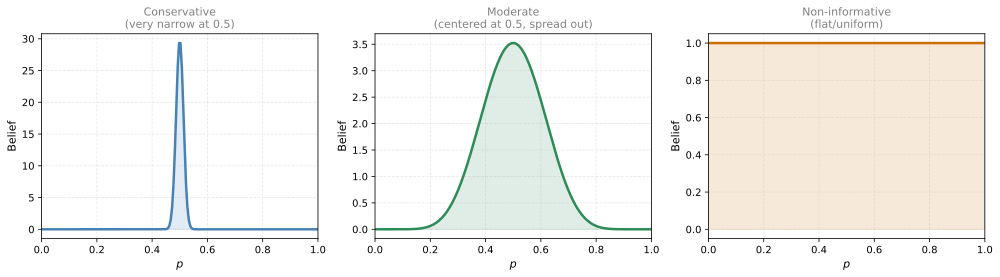
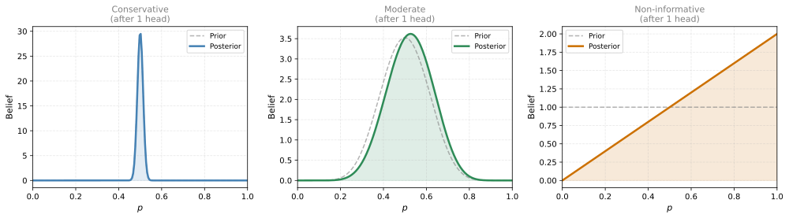
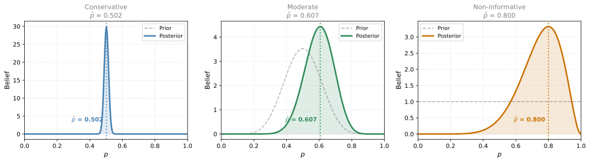
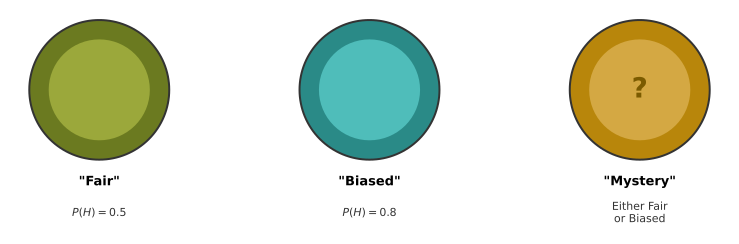
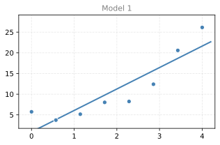
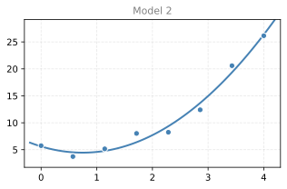
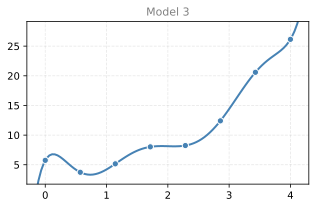

Bayesian Statistics
statistics
In the previous sections, MLE picked the model that made the data most likely. But likelihood is not the whole story. Sometimes the most likely…
In the previous sections, MLE picked the model that made the data most likely. But likelihood is not the whole story. Sometimes the most likely explanation is also the most absurd one. Bayesian statistics fixes this by incorporating prior beliefs about which models are reasonable in the first place.
Back to Popcorn: Why Likelihood Alone is Not Enough
Recall our popcorn example. You walk in and see popcorn on the floor. Now consider two scenarios:
- Movies: creates popcorn with high probability
- Popcorn throwing contest: creates popcorn with very high probability (almost certain)
By pure likelihood, the contest wins. But something feels wrong. A popcorn throwing contest is an extremely unlikely event to begin with. Watching a movie is much more common.
MLE only asked: “given the scenario, how likely is the evidence?” It never asked: “how likely is the scenario itself?”
Incorporating Prior Probability
Let us put numbers to this:
| Scenario | \(P(\text{popcorn} \mid \text{scenario})\) | \(P(\text{scenario})\) | Product |
|---|---|---|---|
| Movies | 0.7 | 0.5 | 0.35 |
| Contest | 0.99 | 0.01 | 0.0099 |
The contest has a higher likelihood (0.99 > 0.7), but a much lower prior probability (0.01 vs 0.5). When we multiply them:
\[ P(\text{popcorn} \mid \text{movies}) \times P(\text{movies}) = 0.7 \times 0.5 = 0.35 \]
\[ P(\text{popcorn} \mid \text{contest}) \times P(\text{contest}) = 0.99 \times 0.01 = 0.0099 \]
Movies wins because it balances a reasonable likelihood with a high prior probability.
Connection to Bayes’ Theorem
Notice that the product \(P(\text{evidence} \mid \text{scenario}) \times P(\text{scenario})\) looks familiar. From Bayes’ theorem:
\[ P(A \mid B) \cdot P(B) = P(A \cap B) \]
So what we are really maximizing is \(P(\text{popcorn} \cap \text{scenario})\), the probability that both the scenario happened AND the evidence appeared. This is called the posterior (up to a normalizing constant), and maximizing it is called Maximum A Posteriori (MAP) estimation.
MLE vs MAP
| Method | What it maximizes | Considers prior? |
|---|---|---|
| MLE | \(P(\text{data} \mid \theta)\) | No |
| MAP | \(P(\text{data} \mid \theta) \times P(\theta)\) | Yes |
- MLE asks: “Which parameters make the data most likely?” It ignores whether those parameters are reasonable.
- MAP asks: “Which parameters make the data most likely, given that some parameters are more plausible than others?”
The prior \(P(\theta)\) encodes your belief about which parameter values are reasonable before seeing any data. After seeing data, you update that belief.
Review Questions
1. Why does MLE pick the popcorn contest over movies, and why is this problematic?
TipAnswer
MLE picks the contest because \(P(\text{popcorn} \mid \text{contest}) > P(\text{popcorn} \mid \text{movies})\). It only looks at the likelihood. This is problematic because it ignores that a popcorn contest is an extremely unlikely event in the first place. A reasonable estimation method should account for how plausible each scenario is a priori.
2. What does the “prior” represent in MAP estimation?
TipAnswer
The prior \(P(\theta)\) represents your belief about how likely each parameter value (or scenario) is before seeing any data. It encodes background knowledge. For example, you know that watching movies is a common activity while popcorn throwing contests are rare.
3. How does MAP combine the likelihood and the prior?
TipAnswer
MAP maximizes the product: \(P(\text{data} \mid \theta) \times P(\theta)\). This balances how well the parameters explain the data (likelihood) with how plausible the parameters are on their own (prior). A parameter value must score well on both to win.
Frequentist vs Bayesian
This is an age-old debate in statistics between two broad philosophies. The name “Bayesian” comes from Thomas Bayes (1701–1761), the English mathematician who first formulated Bayes’ theorem. The Bayesian approach applies his theorem to model parameters: start with a prior belief, observe data, and update. The root difference between the two philosophies lies in how they interpret probabilities.
Coin in the Street
A frequentist and a Bayesian find a coin in the street. They toss it 10 times, getting 8 heads and 2 tails.
- Frequentist says: “The probability of heads is 0.8.” (That is the observed frequency. Done.)
- Bayesian reflects: “From experience, coins are almost always fair. I had a strong belief that \(p \approx 0.5\). Seeing the evidence, I am willing to adjust my belief, but not by much. Maybe \(p \approx 0.55\).”
The big difference: the Bayesian introduces the idea of a prior belief (what you thought before seeing data) and updates it based on the evidence. The frequentist has no concept of prior beliefs and goes purely by the data.
Conceptual Differences
| Frequentist | Bayesian | |
|---|---|---|
| Probability means | Long-term frequency of events (if you repeat the experiment infinitely) | Degree of belief or certainty about an event |
| Prior beliefs | None. Only the evidence matters. | Yes. You start with a prior and update it. |
| Goal | Find the model with the greatest likelihood of generating the observed data (MLE) | Update prior beliefs about the model based on observations (MAP) |
| Point estimation | MLE: \(\hat{\theta} = \arg\max P(\text{data} \mid \theta)\) | MAP: \(\hat{\theta} = \arg\max P(\text{data} \mid \theta) \cdot P(\theta)\) |
Everything we have done so far (MLE) follows the frequentist approach. Now let us dig deeper into the Bayesian approach and see how priors affect predictions.
Review Questions
4. What is the key philosophical difference between a frequentist and a Bayesian?
TipAnswer
A frequentist interprets probability as the long-run frequency of events and uses only the observed data to estimate parameters. A Bayesian interprets probability as a degree of belief and incorporates prior knowledge (what you believed before seeing data) into the estimation, updating that belief as new evidence arrives.
5. In the coin example, why does the Bayesian not report \(p = 0.8\) like the frequentist?
TipAnswer
Because the Bayesian starts with a strong prior belief that coins are usually fair (\(p \approx 0.5\)). Seeing 8 heads out of 10 is evidence that \(p\) might be higher, but it is not enough to completely override the prior. The Bayesian compromises between prior belief and observed data, arriving at something between 0.5 and 0.8.
6. Is MLE a frequentist or Bayesian method?
TipAnswer
MLE is a frequentist method. It maximizes \(P(\text{data} \mid \theta)\) without any prior on \(\theta\). It does not incorporate beliefs about which parameter values are more likely before seeing the data.
Maximum a Posteriori (MAP) Estimation: Updating Beliefs
Imagine three Bayesians find a coin and want to figure out its probability of landing heads. They each start with a different prior belief about \(p\):
- Conservative Bayesian: absolutely convinced the coin is fair. Their prior is a very narrow curve centered at \(p = 0.5\) (strong belief, almost no room for deviation).
- Moderate Bayesian: thinks the coin is probably fair, but willing to accept some bias. Their prior is centered at 0.5 but more spread out.
- Non-informative Bayesian: does not want to assume anything. Their prior assigns equal weight to every value of \(p\) from 0 to 1 (a flat/uniform prior).
After Observing 1 Head
What happens to each Bayesian’s beliefs after a single coin toss that lands heads?

- The conservative Bayesian barely shifts at all. One observation is not enough to override a strong prior.
- The moderate Bayesian shifts slightly to the right (toward higher \(p\)).
- The non-informative Bayesian changes drastically, going from a flat line to a distribution that increases linearly toward \(p = 1\).
Now imagine they keep tossing until they have 8 heads and 2 tails total.
After Observing 8 Heads and 2 Tails
All three Bayesians observe the same data (8 heads, 2 tails). But because they started with different priors, their updated beliefs (posteriors) are different:

- The conservative Bayesian barely moved (MAP \(\approx\) 0.501). Their strong prior overwhelms the evidence.
- The moderate Bayesian shifted noticeably (MAP \(\approx\) 0.607). They compromised between prior (0.5) and data (0.8).
- The non-informative Bayesian landed at MAP = 0.8. With no prior information, they are entirely guided by the data.
Key Insight: Non-informative Prior = MLE
The third result (MAP = 0.8) is exactly what MLE would give (\(\hat{p} = 8/10 = 0.8\)). This is not a coincidence. When you use a flat (non-informative) prior that assigns equal weight to all values, MAP reduces to MLE. The prior contributes nothing, so only the likelihood matters.
This shows that MLE is a special case of MAP with a uniform prior.
Priors, Posteriors, and MAP
- Prior: your belief about the parameter before seeing data. Denoted \(P(\theta)\).
- Posterior: your updated belief after seeing data. Denoted \(P(\theta \mid \text{data})\).
- MAP estimate: the value of \(\theta\) that maximizes the posterior (the mode of the posterior distribution).
\[ \hat{\theta}_{MAP} = \arg\max_\theta \; P(\theta \mid \text{data}) = \arg\max_\theta \; P(\text{data} \mid \theta) \cdot P(\theta) \]
Review Questions
7. Why do the three Bayesians get different MAP estimates even though they observed the same data?
TipAnswer
Because they started with different prior beliefs. The posterior is a combination of the prior and the likelihood. A strong prior (conservative) barely moves regardless of the data. A weak/flat prior (non-informative) lets the data dominate completely. The prior determines how much weight you give to your pre-existing beliefs vs. the evidence.
8. When does MAP give the same result as MLE?
TipAnswer
When the prior is non-informative (flat/uniform). A uniform prior assigns equal probability to all parameter values, so it does not favor any value over another. In that case, maximizing \(P(\text{data} \mid \theta) \cdot P(\theta)\) is the same as maximizing \(P(\text{data} \mid \theta)\) alone, which is MLE.
9. What is the difference between a prior and a posterior?
TipAnswer
The prior \(P(\theta)\) is your belief about the parameter before seeing any data. The posterior \(P(\theta \mid \text{data})\) is your updated belief after observing data. The posterior combines the prior with the likelihood of the data, typically via Bayes’ theorem.
Updating Priors with Bayes’ Theorem
Now let us learn how to actually perform the belief updates. The math starts with Bayes’ theorem, which you already studied in the probability section.
Recap of Bayes’ Theorem
\[ \overbrace{P(A \mid B)}^{\text{Posterior}} = \frac{\overbrace{P(B \mid A)}^{\text{Likelihood}} \cdot \overbrace{P(A)}^{\text{Prior}}}{\underbrace{P(B)}_{\text{Evidence}}} \]
Where:
- \(P(A \mid B)\) — Posterior: belief that \(A\) will happen after considering evidence \(B\)
- \(P(A)\) — Prior: probability of event \(A\) before event \(B\) happens
- \(P(B \mid A)\) — Likelihood: probability of evidence \(B\) appearing, given \(A\) happened
- \(P(B)\) — Evidence: probability of \(B\) in any circumstances, computed as \(P(B) = P(B \mid A)\,P(A) + P(B \mid A')\,P(A')\)
Worked Example: Fair or Biased Coin?
You find a mystery coin. It is either:
- Fair: \(P(\text{heads}) = 0.5\)
- Biased: \(P(\text{heads}) = 0.8\)

You do not know which type your mystery coin is. The only way to figure it out is to flip it.
\[ \overbrace{P(Y = 0.5) = 0.75, \quad P(Y = 0.8) = 0.25}^{\text{Priors (before flipping)}} \]
You flip the coin once and observe:
\[ \underbrace{X = \begin{cases} 0 & \text{if tails} \\ 1 & \text{if heads} \end{cases} \quad \Rightarrow \quad x = 1 \text{ (heads!)}}_{\text{Evidence}} \]
After applying Bayes’ theorem:
\[ \overbrace{P(Y = 0.5 \mid x = 1) = 0.652}^{\text{Posterior (updated belief)}} \]
Your belief that the coin is fair dropped from 0.75 to 0.652. Let us see how this is calculated.
Applying Bayes’ Theorem
\[ P(Y = 0.5 \mid x = 1) = \frac{P(x = 1 \mid Y = 0.5) \cdot P(Y = 0.5)}{P(x = 1)} \]
Step by step:
- \(P(x = 1 \mid Y = 0.5) = 0.5\) (a fair coin gives heads 50% of the time)
- \(P(Y = 0.5) = 0.75\) (our prior)
- \(P(x = 1) = P(x=1 \mid Y=0.5) \cdot P(Y=0.5) + P(x=1 \mid Y=0.8) \cdot P(Y=0.8)\)
\[ P(x = 1) = 0.5 \times 0.75 + 0.8 \times 0.25 = 0.375 + 0.200 = 0.575 \]
Putting it together:
\[ P(Y = 0.5 \mid x = 1) = \frac{0.5 \times 0.75}{0.575} = \frac{0.375}{0.575} = 0.652 \]
Result: After seeing one heads, your belief that the coin is fair dropped from 0.75 to 0.652. The evidence of heads slightly increased your belief that the coin might be biased (from 0.25 to 0.348). Notice \(0.652 + 0.348 = 1\).
General Form with Random Variables
The example above uses discrete variables. In general, there are four cases depending on whether \(X\) (evidence) and \(\Theta\) (parameter) are discrete or continuous. Use PMFs (\(p\)) for discrete variables and PDFs (\(f\)) for continuous variables:
| \(\Theta\) is discrete | \(\Theta\) is continuous | |
|---|---|---|
| \(X\) is discrete | \(p_{\Theta \mid X=x}(\theta) = \dfrac{p_{X \mid \Theta=\theta}(x) \, p_\Theta(\theta)}{p_X(x)}\) | \(f_{\Theta \mid X=x}(\theta) = \dfrac{p_{X \mid \Theta=\theta}(x) \, f_\Theta(\theta)}{p_X(x)}\) |
| \(X\) is continuous | \(p_{\Theta \mid X=x}(\theta) = \dfrac{f_{X \mid \Theta=\theta}(x) \, p_\Theta(\theta)}{f_X(x)}\) | \(f_{\Theta \mid X=x}(\theta) = \dfrac{f_{X \mid \Theta=\theta}(x) \, f_\Theta(\theta)}{f_X(x)}\) |
In all four cases, the structure is the same:
\[ \text{Posterior} = \frac{\text{Likelihood} \times \text{Prior}}{\text{Evidence}} \]
The left side is always the posterior (updated belief about \(\Theta\) after observing \(X = x\)). The right side always has the likelihood times the prior divided by the evidence. The only thing that changes is whether you use PMFs or PDFs depending on which variables are discrete vs continuous.
Review Questions
10. In the fair/biased coin example, why did \(P(\text{fair})\) decrease from 0.75 to 0.652 after seeing heads?
TipAnswer
Because heads is more likely under the biased coin (0.8) than the fair coin (0.5). Observing heads is mild evidence toward the coin being biased, so the posterior probability of fair decreases slightly. The prior was strong (0.75), so the shift is small after just one observation.
11. How do you compute \(P(x = 1)\) (the evidence) in the denominator?
TipAnswer
You use the law of total probability: sum over all possible values of \(Y\), weighting the likelihood by the prior. \(P(x=1) = P(x=1 \mid Y=0.5) \cdot P(Y=0.5) + P(x=1 \mid Y=0.8) \cdot P(Y=0.8) = 0.5 \times 0.75 + 0.8 \times 0.25 = 0.575\).
12. When do you use PDFs vs PMFs in Bayes’ theorem?
TipAnswer
Use PMFs when the variable is discrete (takes specific values, like a coin being fair or biased). Use PDFs when the variable is continuous (takes any real value, like a mean \(\mu\) that could be any number). You can mix them if one variable is discrete and the other is continuous.
Relationship Between MAP, MLE, and Regularization
Now comes the elegant punchline that ties everything together. You have learned three separate concepts:
- MLE: maximize \(P(\text{data} \mid \text{model})\)
- MAP: maximize \(P(\text{data} \mid \text{model}) \times P(\text{model})\)
- Regularization: minimize Loss \(+ \lambda \cdot \sum a_j^2\)
It turns out that MAP and regularized regression are the same thing, just viewed from different angles.
From MAP to Regularization
Suppose you have data and three polynomial models. In the MAP framework, you want to maximize:
\[ P(\text{data} \mid \text{model}) \times P(\text{model}) \]
The first term is the likelihood (how well the model fits the data). The second term is the prior (how likely the model is to exist in the first place). Simpler models are more likely; complex models are unlikely.
How do we turn this product into a sum? Take the logarithm:
\[ \log\left[P(\text{data} \mid \text{model}) \times P(\text{model})\right] = \log P(\text{data} \mid \text{model}) + \log P(\text{model}) \]
What is \(P(\text{model})\)?
Here is the key idea: assume the coefficients of the model are drawn from a standard normal distribution \(\mathcal{N}(0, 1)\). The more coefficients a model has, the lower its probability (because you multiply more fractions together):
Model 1
Equation: \(a_1 x + b\)
\[P(\text{Model 1}) = \frac{1}{\sqrt{2\pi}} e^{-\frac{1}{2}a_1^2}\]
(1 coefficient drawn from \(\mathcal{N}(0, 1)\))

Model 2
Equation: \(a_1 x^2 + a_2 x + b\)
\[P(\text{Model 2}) = \frac{1}{\sqrt{2\pi}} e^{-\frac{1}{2}a_1^2} \cdot \frac{1}{\sqrt{2\pi}} e^{-\frac{1}{2}a_2^2}\]
(2 coefficients drawn from \(\mathcal{N}(0, 1)\))

Model 3
Equation: \(a_1 x^{10} + a_2 x^9 + \cdots + a_{10} x + b\)
\[P(\text{Model 3}) = \prod_{i=1}^{10} \frac{1}{\sqrt{2\pi}} e^{-\frac{1}{2}a_i^2}\]
(10 coefficients drawn from \(\mathcal{N}(0, 1)\))

The key point: Model 1 has one coefficient drawn from \(\mathcal{N}(0,1)\), so \(P(\text{Model 1})\) is relatively high. Model 3 has 10 coefficients, each a fraction less than 1, all multiplied together, making \(P(\text{Model 3})\) extremely small. This is why complex models are penalized.
Putting It Together
We want to maximize:
\[ \underbrace{P(\text{data} \mid \text{model})}_{\text{likelihood}} \times \underbrace{P(\text{model})}_{\text{prior}} \]
From the MLE and Linear Regression section, we know:
\[ P(\text{data} \mid \text{model}) \propto e^{-\frac{1}{2}\sum d_i^2} \]
And from the Gaussian prior on coefficients:
\[ P(\text{model}) \propto e^{-\frac{1}{2}\sum a_j^2} \]
Taking the logarithm of the product:
\[ \log P(\text{data} \mid \text{model}) + \log P(\text{model}) = -\frac{1}{2}\sum d_i^2 - \frac{1}{2}\sum a_j^2 \]
Maximizing this (multiply by \(-1\), flip to minimizing):
\[ \text{Minimize:} \quad \underbrace{\sum d_i^2}_{\text{squared loss}} + \underbrace{\sum a_j^2}_{\text{L}_2 \text{ regularization}} \]
For each of the three models, the new loss (what we minimize) is:
| \(P(\text{Model})\) term | \(P(\text{Data} \mid \text{Model})\) term | |||
|---|---|---|---|---|
| Model 1 | \(a_1^2\) | \(+\) | \(d_1^2 + d_2^2 + d_3^2 + d_4^2 + d_5^2\) | (1 coefficient) |
| Model 2 | \(a_1^2 + a_2^2\) | \(+\) | \(d_1^2 + d_2^2 + d_3^2 + d_4^2 + d_5^2\) | (2 coefficients) |
| Model 3 | \(a_1^2 + \cdots + a_{10}^2\) | \(+\) | \(d_1^2 + d_2^2 + d_3^2 + d_4^2 + d_5^2\) | (10 coefficients) |
The squared loss (right column) is the same for all models. But the regularization penalty (left column) grows with model complexity. Model 3 has 10 squared coefficients added to its loss, heavily penalizing it. This is why the simpler Model 2 often wins despite Model 3 fitting the data better.
This is exactly regularized least squares. The squared loss comes from the likelihood, and the \(L_2\) regularization penalty comes from the Gaussian prior on the coefficients.
Summary of Equivalences
\[ \boxed{ \begin{aligned} &\text{Maximize } P(\text{data} \mid \theta) &&\Longleftrightarrow \quad \text{Minimize squared loss (MLE)} \\ &\text{Maximize } P(\text{data} \mid \theta) \cdot P(\theta) &&\Longleftrightarrow \quad \text{Minimize squared loss + regularization (MAP)} \end{aligned} } \]
| Probabilistic view | Optimization view |
|---|---|
| \(\max P(\text{data} \mid \theta)\) | \(\min \sum d_i^2\) (least squares) |
| \(\max P(\text{data} \mid \theta) \cdot P(\theta)\) | \(\min \sum d_i^2 + \lambda \sum a_j^2\) (regularized least squares) |
| Likelihood | Loss |
| Gaussian prior on coefficients | \(L_2\) penalty |
Review Questions
13. How does taking the logarithm convert MAP into regularized regression?
TipAnswer
The MAP objective is a product: \(P(\text{data} \mid \theta) \times P(\theta)\). Taking the log converts the product into a sum: \(\log P(\text{data} \mid \theta) + \log P(\theta)\). The first term becomes the negative squared loss, and the second term (with a Gaussian prior on coefficients) becomes the negative sum of squared coefficients. Maximizing the sum is equivalent to minimizing loss + penalty.
14. Why does assuming coefficients come from a standard normal distribution lead to \(L_2\) regularization?
TipAnswer
The Gaussian PDF is \(\frac{1}{\sqrt{2\pi}} e^{-\frac{1}{2}a^2}\). Taking the log gives \(-\frac{1}{2}a^2\) (plus a constant). For multiple coefficients, the log of the product is \(-\frac{1}{2}\sum a_j^2\). Maximizing this means minimizing \(\sum a_j^2\), which is exactly the \(L_2\) regularization penalty.
15. What is the relationship between MLE and MAP when there is no prior (or a flat prior)?
TipAnswer
With a flat (uniform) prior, \(P(\theta)\) is constant for all \(\theta\), so it does not affect the optimization. MAP reduces to MLE. Equivalently, in the regression view, \(\lambda = 0\) (no regularization) gives plain least squares, which is the MLE solution.
16. Which of the following best describes how “priors” are used in Bayesian statistics?
- After collecting data, prior beliefs are used to adjust the values of that data to better align with the patterns you expected to observe.
- Priors are used before data is available to assist in making conclusions. After collecting data, priors can be discarded.
- Priors are used to generate data in instances when direct observation of a phenomenon is impossible.
- Prior beliefs are updated based on how well they align with the data observed.
TipAnswer
d. In Bayesian statistics, you start with prior beliefs about a parameter, then use Bayes’ theorem to update those beliefs based on observed data. The result is the posterior. Priors are not discarded after seeing data (option b); they are combined with the likelihood to form the posterior.
17. Two Bayesian statisticians find a coin. Bayesian 1 strongly believes \(P(H) \approx 0.5\) (very narrow prior). Bayesian 2 uses a uniform prior. They flip 10 times: 3 heads, 7 tails. What are their MAP estimates?
- Bayesian 1: \(P(H) = 0.49\), Bayesian 2: \(P(H) = 0.30\)
- Bayesian 1: \(P(H) = 0.51\), Bayesian 2: \(P(H) = 0.30\)
- Bayesian 1: \(P(H) = 0.30\), Bayesian 2: \(P(H) = 0.30\)
- Bayesian 1: \(P(H) = 0.30\), Bayesian 2: \(P(H) = 0.49\)
TipAnswer
a. Bayesian 1 has a very strong prior at 0.5, so even 3H/7T barely moves it (MAP ≈ 0.49). Bayesian 2 has a flat prior, so the data dominates entirely and MAP = 3/10 = 0.30 (same as MLE). The strong prior resists change; the flat prior defers to the data.